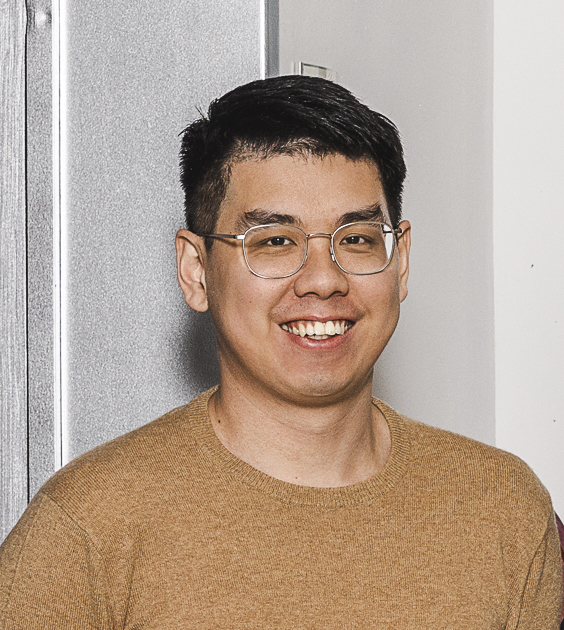

趙慶宇
Assistant Professor, Dept. of Civil Engineering, NCKU
My research focuses on understanding how soils respond under real, complex conditions — whether extreme events, climate change, or seismic loading.
My approach is built on three pillars: advanced laboratory testing to capture the true mechanical behaviour of soils and develop constitutive models, field monitoring to bridge the gap between laboratory and engineering practice, and numerical simulation to transform experimental and monitoring results into predictive tools for engineering decisions.
I believe that good engineering starts with truly understanding what the soil is doing. On this foundation, combining constitutive models, data-driven methods, and digital twin technologies, we can shift infrastructure management from reactive repair to proactive prevention.
An improved anisotropic constitutive model for soft clays, developed based on advanced laboratory testing.
Co-developed a novel Fabry-Perot fibre-optic sensor with TU Delft for local pore pressure measurement. Published in Geotechnique Letters (2025).
Long-term collaboration with the group of Prof. Cristina Jommi and Dr. Stefano Muraro at Delft University of Technology.